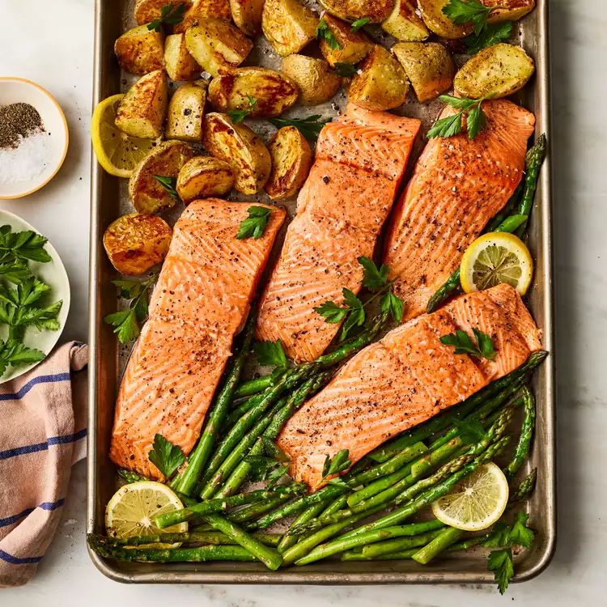

Garlic Butter-Roasted Salmon with Potatoes and Asparagus
Garlic Butter-Roasted Salmon with Potatoes and Asparagus

Description
A one pan healthy recipe involving salmon, potatoes, and asparagus.
Indregients
- 1 pound baby Yukon Gold potatoes, halved
- 2 tablespoons extra-virgin olive oil
- 3/4 teaspoon salt, divided
- 1/2 teaspoon ground pepper, divided
- 12 ounces asparagus
- 2 tablespoons melted butter
- 1 tablespoon lemon juice
- 2 cloves garlic, minced
- 1 1/4 pounds salmon fillet, skinned and cut into 4 portions
- Chopped parsley for garnish
Steps
-
Preheat oven to 400°F. Toss potatoes, 1 tablespoon oil, 1/4 teaspoon salt and 1/8 teaspoon pepper together in a medium bowl.
Spread in an even layer on a large rimmed baking sheet. Roast until starting to soften and brown, about 15 minutes.
-
Meanwhile, toss asparagus with the remaining 1 tablespoon oil, 1/8 teaspoon salt and 1/8 teaspoon pepper in the medium bowl.
Combine butter, lemon juice, garlic, 1/4 teaspoon salt and the remaining 1/4 teaspoon pepper in a small bowl.
-
Sprinkle salmon with the remaining 1/8 teaspoon salt. Move the potatoes to one side of the pan. Place the salmon in the center of the pan;
drizzle with the butter mixture. Spread the asparagus on the empty side of the pan. Roast until the salmon is just cooked through and the
vegetables are tender, 10 to 12 minutes. Garnish with parsley.